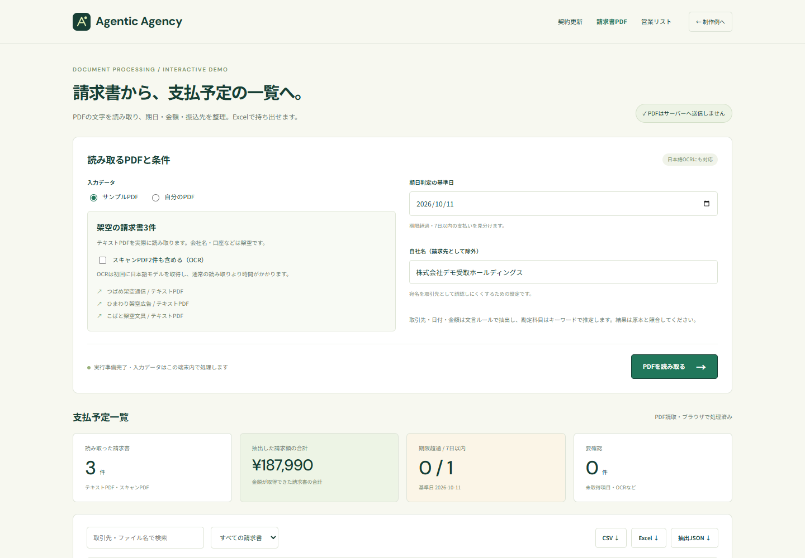
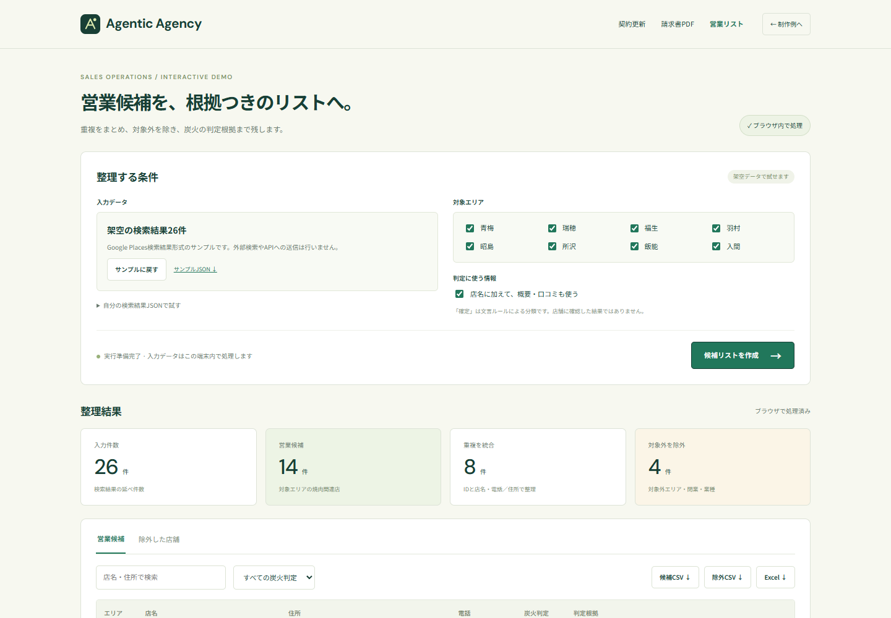

調査・分析・資料制作
市場や競合の調査、情報の比較、意思決定に使うレポート・提案資料づくり。
調査レポート / 競合分析 / 提案資料GROK BOT HACKATHON PROJECT
依頼から、調査・制作・納品まで。
リサーチ、資料づくり、Webアプリ、業務自動化。
役割を持ったBotが連携し、使える成果物へ。
AIで構成する受託チーム「Agentic Agency」です。
Grok Botを軸に、AIネイティブな受託モデルを検証するプロジェクト。
目的・必要な成果物・完成条件
構想上のチーム構成。実行状況を表示する画面ではありません。
ひとつの依頼から、使える成果物まで。
WHAT WE CAN WORK ON
つくりたいものも、減らしたい手作業も。
目的を整理し、必要な工程を組み立てます。
市場や競合の調査、情報の比較、意思決定に使うレポート・提案資料づくり。
調査レポート / 競合分析 / 提案資料サービス紹介サイトから、実際に操作できる業務アプリや検証用プロトタイプまで。
Webサイト / 業務アプリ / MVPExcel・CSV・PDFの処理、営業リストの整理、繰り返す確認作業を仕組みに。
データ抽出 / ファイル処理 / 定型業務問い合わせ対応、情報検索、調査から制作への引き継ぎなど、仕事に合うBotの設計。
チャットBot / 検索AI / ワークフロー上記は相談・展開を想定する領域です。対応範囲・納期・費用は、依頼内容と必要なアクセス権を確認して決めます。
3 LIVE DEMOS / WORK YOU CAN INSPECT
サンプルを選び、条件を変え、ファイルを出力。
どれもログイン不要で操作できます。

Koushin / 見落としを、更新前に。
開始日と契約期間から更新対象を抽出。終了日列の反映を待たずに、担当者ごとの確認資料をつくります。
表示値は2026年11月・既定ルールのサンプル結果。

PDFから、支払予定の一覧へ。
取引先・金額・支払期日を読み取り、期日順に整理。スキャンPDFは日本語OCRで処理し、原本と比較できます。
表示値はテキストPDF3件。OCR結果は要確認。

検索結果から、根拠つきの候補へ。
店舗情報の重複をまとめ、対象エリア・業種で絞り込み。炭火の判定根拠と、除外した理由も残します。
架空データの既定条件。分類は文言ルールによる判定。
入力ファイルの処理と出力はブラウザ内で行います。初回は実行環境の取得に通信が必要です。請求書の日本語OCRは、モデルの取得と読み取りに時間がかかります。
この3つは実際に操作できる業務ツールです。Grok APIによるBot連携は今後の実装対象です。下のチーム構成では、依頼から納品までをつなぐ設計を紹介します。
Botチームの構成を見るBUILT AROUND GROK BOT
受託業務の工程を分担し、
次の担当が使える形で引き継ぐ設計。
目的・要件・完成条件を整理し、工程と担当を決める。
必要な情報を調査し、出典と未確認事項を残す。
主張と根拠を結びつけ、論点や分析上の制約を整理する。
レポート・資料・アプリなど、依頼に合った形式へ仕上げる。
要件・事実・形式を確認し、修正が必要なら該当工程へ戻す。
成果物と検証結果を整理し、人間の承認後に提出する。
役割・Skill名は設計上の定義です。稼働済みBotや、全工程の自動化を示すものではありません。
FROM REQUEST TO DELIVERY
何のためにつくるか、必要な形式は何か。要件と完了条件を、作業前に明確にします。
調査・分析・制作・QAをつなぎ、出典や確認結果を残すワークフローを設計します。
成果物・実行証跡・未確認事項をまとめ、提出先と内容を確認して届けることを目指します。
今回の検証対象は、リサーチから成果物の作成・提出までの一連の流れです。
A REUSABLE WAY TO WORK
案件で確認した手順をSkillとして整理し、次の仕事で再利用する。Agentic Agencyが目指すのは、Botの数を増やすことだけではなく、品質を確かめた仕事の進め方を蓄積することです。
完了した工程と、人間が介入した箇所を確かめる。
異なる依頼でも、品質・コスト・納期を検証する。
発注側のAIと受託側のAIがつながるネットワークへ。